知返 AhaDiff 用户使用指南
AhaDiff 把一次 git diff 变成带代码证据的课程、一份可验证的 claim 清单、测验、复习卡、概念图谱和质量棘轮。它默认 local-first：每个仓库自己的 AhaDiff 状态都存在 .ahadiff/ 下。
1. 快速开始
从 PyPI 安装已发布的 CLI。只有参与 AhaDiff 开发时，才需要从源码 checkout 运行。
安装
用 pip 安装 CLI 和内置 WebUI。
从源码开发（贡献者）
同步锁定的开发环境，再确认模块能正常运行。
第一次在仓库中使用
第一次在某个仓库里用 AhaDiff 时，先初始化它并确认环境。
AhaDiff 生成的一切都留在这个仓库里。没有全局数据库。
存储门禁接受这些 SQLite 版本
uv tool 在 Python 3.11.14 上自带 SQLite 3.50.4。已被接受。
版本号更高不代表自动被接受。门禁要求 SQLite 3.51.3 及以上，或回填补丁的 3.50.4+ / 3.44.6+ 版本，所以 3.51.0-3.51.2 低于门槛、不会被接受。如果 ahadiff doctor 提示你的版本不行，换一个自带 SQLite 满足门槛的 Python，例如 uv tool、python.org 安装包、Homebrew 或 conda。
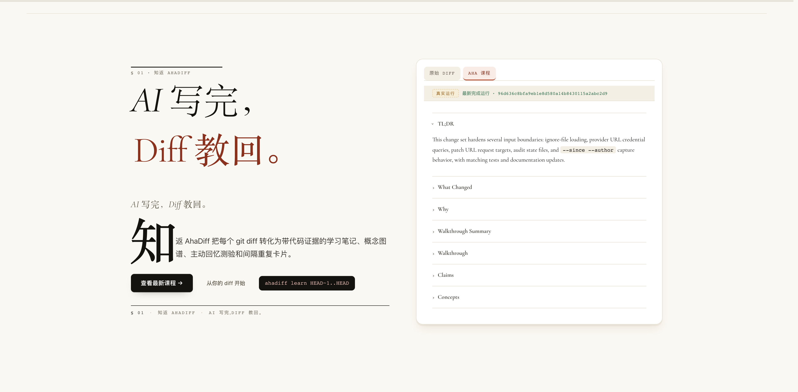
- 衬线主标题 Ship with AI. Learn it back.
- 首字下沉的简介段落介绍 AhaDiff。
- 查看最新课程 CTA 与
uv run learn命令片段。 - 右侧卡片预览最新已完成运行的课程大纲。
2. 配置 Provider
配置一个 LLM provider 是 ahadiff learn 之前唯一的准备步骤。密钥放在环境变量里；你只把变量名交给 AhaDiff。密钥不会进入 Git、README、manifest 或纳管的脚本。
provider test 做了什么
.ahadiff/config.toml。仓库配置里接受的密钥环境变量名称：
名称
--api-key-env 是变量的名称。当变量未设置时，标识符形态的值会 fail closed，所以名称不会被误当作 bearer token 发出去。
密钥
真正的密钥留在你的 shell 环境里。它从不进入命令行参数或文件。
配置 provider
运行 ahadiff serve 在 Settings 里添加 provider（卡片会在保存前预览模型限额，不发远程请求、不读取密钥），或在下面对应的标签里运行一次 provider test。
导出密钥和 provider base URL，然后运行一次探测。
不回显地读入密钥，再探测一个 Responses/API provider 示例。在 macOS / Linux 上：
在 Windows PowerShell 上，用 Read-Host -AsSecureString 读入：
指向一个本地的 OpenAI 兼容服务。Ollama 和 LM Studio 各自暴露自己的 base URL。
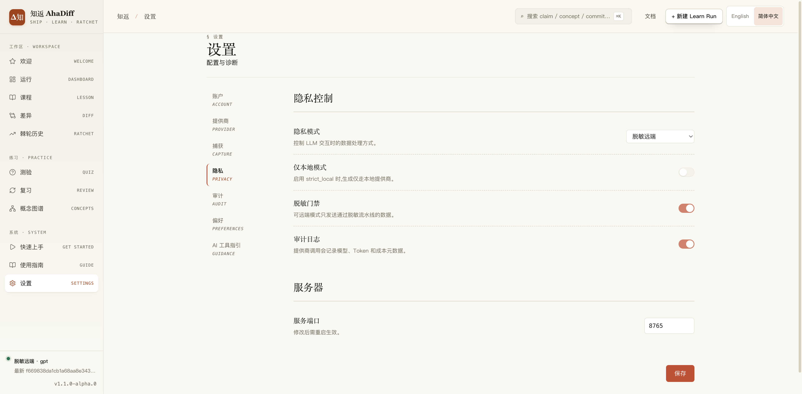
- 左侧设置栏：Account、Provider、Capture、Privacy、Audit。
- 隐私控制：隐私模式、本地模式、脱敏门、审计日志。
- Server 区块含 serve 端口输入框与 Save 按钮。
Registry 上下文示例
openai
openai 访问的上下文预算openai_responses / API
对于 gpt-5.5，内置 registry 保留这两种上下文 profile。当端点报告真实的总上下文时，可信的实时探测可以覆盖任一 profile。
配置好后，你唯一的 provider（或你在 Settings 里选的生成 provider/model）会被 ahadiff learn 自动使用。只有想覆盖单次运行时才传 --provider / --model。
保存的 max_output_tokens 如何处理
留空 → Auto
不填值表示由 AhaDiff 为你确定输出限额。
可信硬上限
已知且可信的上限会在保存时被 clamp，并返回一条 warning。
未知 / 低置信度 / route-specific / local-runtime
这些只作为 warning。不会被当成硬性保证。
本地服务报告了错误的 JSON 能力？
只在 .ahadiff/config.toml 里设置已知的布尔 override。NewAPI 默认 supports_native_json_schema=false；如果你的网关支持原生 JSON schema，就加上 override。
3. 生成课程
选一个 diff 来源
AhaDiff 有 10 种捕获来源。选与你改动相符的那个磁贴。
生成课程和证据
AhaDiff 捕获 diff、扫描安全问题，产出 claim、课程、测验、分数和其他产物。
打开 WebUI 学习
读 Lesson 看解释，跳到 Diff 看证据，做 Quiz 检验理解，用 Review 做间隔重复。
运行与你改动相符的来源。仪表盘的 New Run 对话框对应这同一组分类。
ahadiff learn --lastahadiff learn --stagedahadiff learn --unstaged --include-untrackedahadiff learn --since "2 hours ago"ahadiff learn HEAD~1..HEADahadiff learn --patch change.diffahadiff learn --patch -ahadiff learn --patch-url URLahadiff learn --compare old.py new.pyahadiff learn --compare-dir old/ new/--against-spec SPEC.md 即可把 diff 与 spec 对照；加 --spec-semantic-review 走语义检查。--since 单用 vs --since --author
--since
--since --author
Patch 和 URL 捕获带有注意事项：
WebUI 的 patch 字段接受粘贴的 unified diff 文本，上限 65536 字节；patch 文件、stdin 或更大的 patch 请用 CLI。CLI 的 patch 文件在仓库根目录内解析；外部生成的 patch 传 --patch -。
长时间运行的 CLI 命令会在运行中显示 Rich 状态。把它当作终端反馈，而不是机器可读的输出契约。
4. 使用 WebUI
运行下面任意一条打开本地 React SPA。serve 默认会打开浏览器；加 --no-browser 保持无头，或加 --watch 在文件改动时重建。
工作流一览
页面地图
| 页面 | 用途 |
|---|---|
/ | 仪表盘：最新运行、KPI、棘轮趋势和复习活动。 |
/run/:runId | 运行详情：Overview、Score、Judge、Artifacts。可选的 LLM judge 失败时，Judge 标签显示脱敏的失败面板，而非原始 provider 输出。 |
/run/:runId/lesson | 课程正文、claim 摘要、证据和知识笔记。 |
/run/:runId/diff | Unified/Split diff、claim 圆点和 ClaimInspector。 |
/run/:runId/quiz | Guided / Recall / Transfer 题目。模式徽章标明当前题目是一次性的苏格拉底测验还是 SRS 复习卡。 |
/review | FSRS 复习队列，含 Again / Hard / Good / Easy 评分。 |
/concepts | 概念账本、概念图谱和 Graphify 源。 |
/ratchet | 结果历史、benchmark 摘要、improve 预览和导出入口。 |
/settings | provider、capture、隐私、审计、偏好和项目级 AI 工具指引。AI Tool Guidance 把目标分为 CLI / IDE / CI，显示使用提示，并内置一个无需 provider 的演示。 |
/guide | 日常命令和 15 个项目 AI 工具指引目标。它显示分类过滤、使用提示，以及每个目标在你应用改动前会写入什么；写入和移除仍在 Settings → AI Tool Guidance 里完成。 |
.claude/skills/ahadiff/SKILL.md.agents/skills/ahadiff/SKILL.md.gemini/skills/ahadiff/SKILL.md.agents/skills/ahadiff-antigravity/SKILL.md.agents/skills/ahadiff-antigravity-cli/SKILL.md.agents/rules/ahadiff.md.github/instructions/ahadiff.instructions.md.opencode/agents/ahadiff.md.clinerules/ahadiff.md.continue/rules/ahadiff.md.cursor/rules/ahadiff.mdc.roo/rules/ahadiff.md.windsurf/rules/ahadiff.md
CLAUDE.md、AGENTS.md、GEMINI.md 和 .github/copilot-instructions.md。本仓库忽略生成的 .agents/ 安装，所以本地 Codex / Antigravity 的 skill 产出默认不会被提交。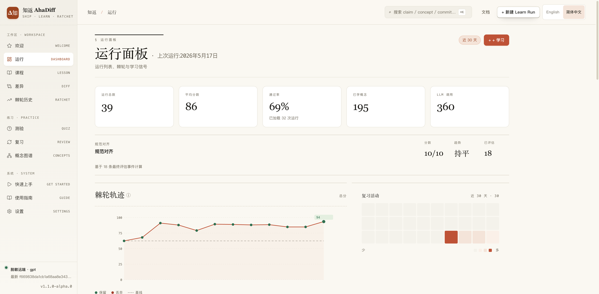
- 顶部统计卡：总运行数、平均分、通过率、概念数、LLM 调用。
- Spec alignment 区块含分数、趋势、评估次数。
- 棘轮轨迹折线图，区分 kept 与 discarded 分数。
- 右侧复习活动热力日历。
Claim 与 diff
每条 claim 都链到 file:line 证据，并带五种徽章之一。glyph 和语义是产品里真实的；色调是映射到本页配色的。
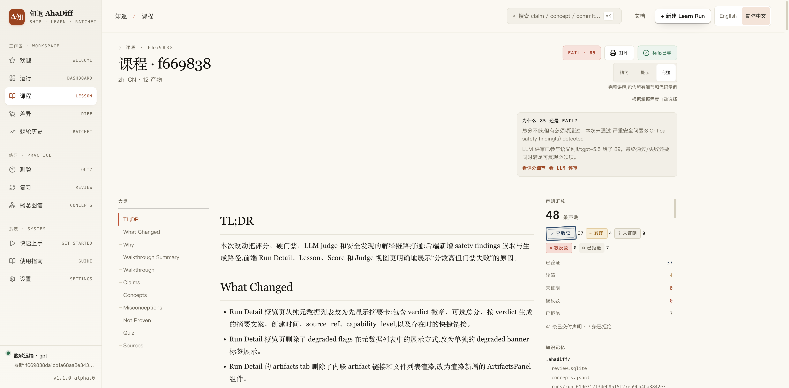
- 顶栏含 PASS 分数、查看评分详情、标记为已学习。
- 右上 Compact / Hint / Full 详细程度切换。
- 左侧大纲栏：TL;DR、改了什么、Claims、概念。
- 右侧 Claims 摘要：verified / weak / not proven 计数。
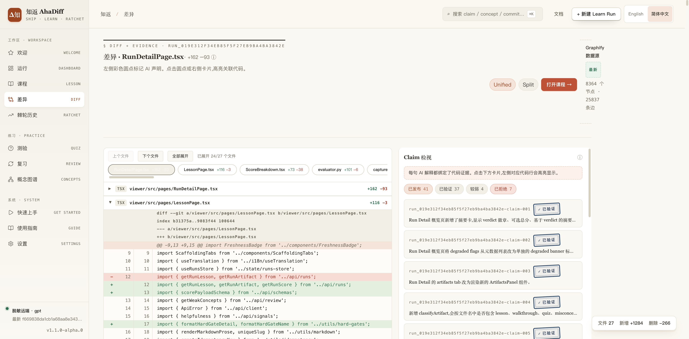
- 中部代码 diff，红/绿标记新增与删除行。
- diff 上方文件标签与 Unified / Split 视图切换。
- 右侧 Claim Inspector 面板逐条列出 claim 卡片。
- verified claim 徽章把解释链回到代码行。
测验与复习
复习给每张卡片评分；评分驱动下一次到期日。
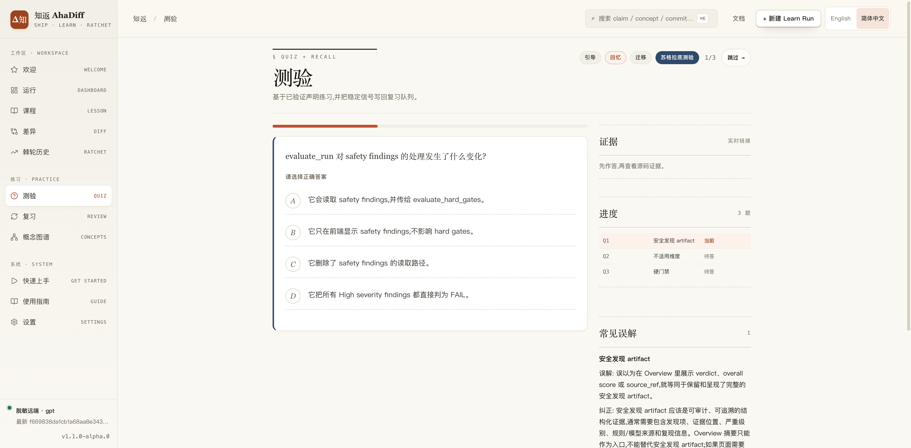
- 单道选择题，含 A/B/C/D 选项。
- Guided / Recall / Transfer 模式标签与进度计数。
- 右侧证据面板，答题后才解锁。
- 右侧 Progress 列出每题状态（pending）。
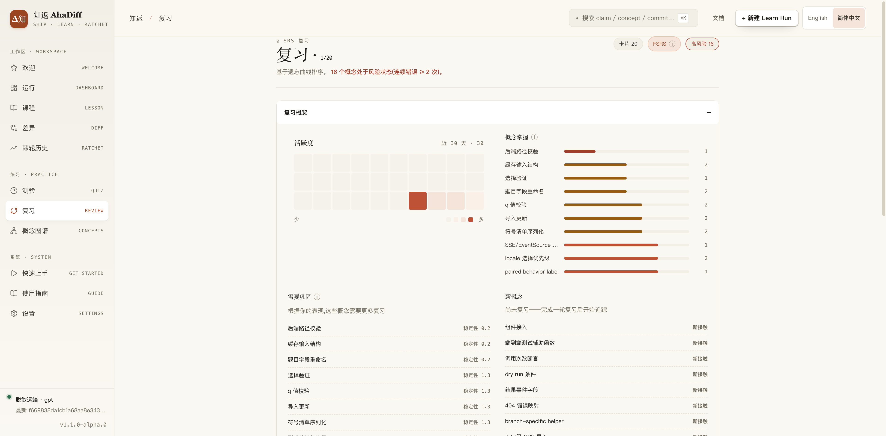
- 顶部计数：到期卡片、FSRS、高风险概念。
- 复习概览活动热力图与概念掌握度列表。
- Needs Practice 列表含各概念 stability 值。
- 右侧 New Concepts 列表标记为 New。
概念
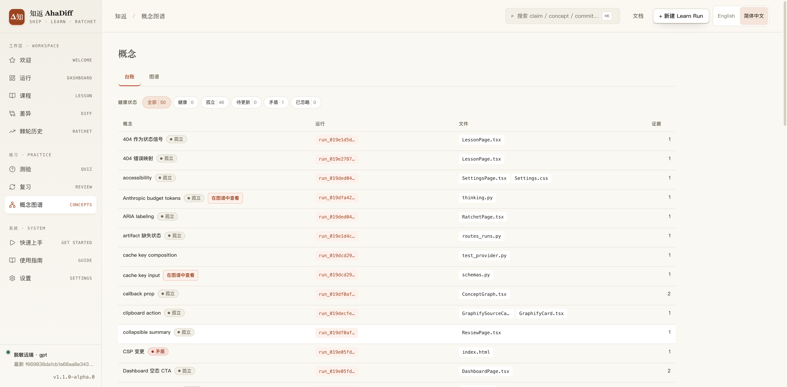
- Ledger / Graph 标签与健康状态过滤计数。
- 表格列：概念、运行、文件、claims。
- 每行健康标签，如 Orphan 与 Contradicted。
- 每个概念行的运行与文件链接。
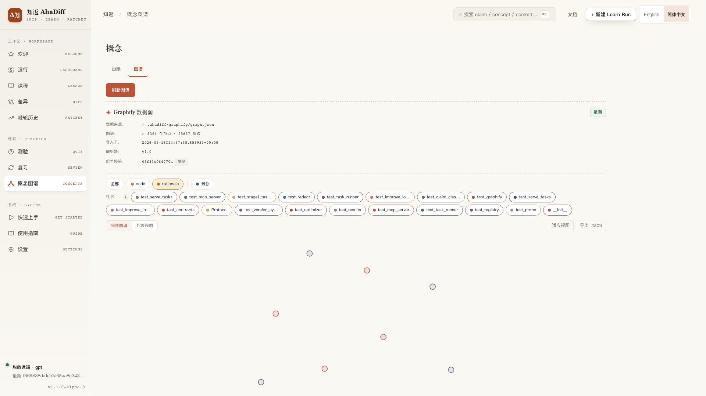
- Ledger / Graph 标签与 Refresh Graph 按钮。
- Graphify 源卡：节点/边数、FRESH 徽章、sha256。
- 社区过滤 chip 与 All / code / rationale 过滤器。
- 下方图节点画布，含 Export JSON、Fit to view。
5. 常用命令
日常工作走 learn、quiz、review。下面的分组覆盖其余一切：启动 UI、管理本地数据。
日常循环
学习与验证
生成一次运行，然后检查、评分、改进。
Serve
打开本地 WebUI。--watch 在文件改动时重建。
improve-run RUN_ID 会重新生成一篇课程，只有确定性评分确实更高时才保留新副本，并作为独立的运行写入、原来那次保持不变。任何安装方式都能用，包括 pip。另一个 improve 命令调整的是 AhaDiff 自身的生成 prompt，只能在 AhaDiff 源码 checkout 里运行。
维护分组
Database
对 review.sqlite 跑 SQLite 完整性门禁。
Graph
查看并重新导入 Graphify 产物。
Concepts
列出、验证并 lint 概念账本。
Export
把结果写到磁盘以便分享（见导出和分享）。
Challenge
需要 opt-in。从一次运行构建 challenge，再查看状态。
Refresh vs learn：谁会动 Graphify
graph refresh / WebUI refresh
graphify update。learn run
graphify update，再导入。6. 导出和分享
WebUI 里的 Ratchet / Export 入口提供四种格式。CLI 覆盖同样的范围。
静态预览
一个 strict-local 静态包，带确定性 zip。没有任何东西离开本机。
TSV
结果以制表符分隔，供表格软件使用。
JSON
结果以 JSON 输出，供脚本和工具使用。
Anki .apkg
把活跃复习卡导出为 Anki 牌组。
无需额外安装。
pip install ahadiff 默认即可用，因为已内置 genanki。7. 能力说明：默认、opt-in 与依赖
能力徽章区分默认行为、opt-in 流程和依赖支撑的导出。点开任意卡片的 Details 看确切行为。
默认 安装即可用
Lesson / Claims / Quiz / Score
默认流水线，在 ahadiff learn 之后产出。
Details
会生成哪些产物取决于 diff 及其 learnability。缺少符号级证明时，仅 patch 的捕获可以使用偏弱的 diff 锚定 claim。在 Quiz 里，源证据在你答题前一直锁定。
可选 LLM judge
仅供参考；确定性分数仍是主判据。
Details
judge 成功运行会写 judge.json。失败会写一份有界、脱敏的 judge_failure.json，含 provider、model、错误类型和一条安全消息。缺失的 judge 产物返回 404，而不是让 API 崩溃。
测验题量
默认固定为 3；自适应需 opt-in。
Details
固定模式接受 1-30 题。在 Settings 里，或用 --quiz-mode auto，AhaDiff 会用 diff 统计选一个有界题量；自适应默认范围是 3-12。
结构化 JSON 输出
JSON object 模式，带一次 validation retry。
Details
公开产物保持不变。只有 provider 能力报告支持时才用原生 schema。不支持的模式会降级；截断或畸形的 fallback JSON 会被重试，而非接受。
自适应捕获限额
全新配置走 Auto；你定制某个限额后转 Manual。
Details
Auto 模式从五个输入确定捕获限额：
编辑其中任意一项都会把仓库迁移到 Manual 模式：
capture.max_files
capture.hard_limit
capture.max_patch_bytes
Provider 智能配置
在 Settings 里保存前预览草稿模型限额。
Details
provider 卡片按草稿 provider class、model 和可选的 limits profile 预览限额，而不会在每次编辑都做远程探测。它显示是否支持 thinking、低置信度 warning、建议的最大输出，以及保存 API 返回的任何 clamp。生成与评判限额分开展示。
WebUI
Welcome、Dashboard、Diff 和 Review 用 ahadiff serve 打开。
Details
Welcome 的 Before/After 演示会把过长的原始 diff 折叠到课程高度，并显示可见 / 总行数。短或空的 diff 没有折叠控件。
AI Tool Guidance
Settings 负责写文件；Guide 只读。
Details
Settings 为 15 个安装目标显示：
- CLI / IDE / CI 分组
- 本地化的快速上手步骤
- 示例 prompt 与预期行为
- 平台说明
- 一个无需 provider 的本地演示
Settings
用受保护的原子替换写文件。
Guide
对同样的提示和文件写入只读预览；没有写入 / 移除按钮。
Opt-in 默认关闭，开了才用
Challenge
默认关闭；通过 config 启用。
Details
CLI 暴露 build / status；完整进阶通过 WebUI / API 进行。
Spec alignment
仅在带 --against-spec 时运行。
Details
加 --spec-semantic-review 走语义检查。没有 spec 的运行会把该维度渲染为 N/A。
依赖 需要 extra 或外部产物
LLM Provider（自带 BYOK）
知返用你自己配置的 LLM Provider 运行：8 种格式任选，模型自己定，不限定具体型号。在『配置 Provider』里设置。
Details
使用前设置好 provider、base URL、model 和 API 密钥环境变量。
APKG 导出
默认即可用；已内置 genanki。
Details
APKG 导出用 pip install ahadiff 默认即可用，因为已内置 genanki。当前活跃复习卡无需额外安装即可导出。
Watch
默认即可用；文件监听已内置。
Details
文件监听默认已包含，ahadiff serve --watch 开箱即用。你也可以手动运行 ahadiff learn。
Graphify refresh
导入已有产物；上限 50000 个节点。
Details
它把 graphify-out/graph.json 重新导入 AhaDiff 缓存，不运行 graphify update。上限是 graph.max_nodes_import（默认 50000）；超限的 refresh 返回 GRAPH_NODE_LIMIT。
一次运行如何评分
八个维度，100 分。分数门禁、contradicted claims、证据覆盖或安全门禁都可能让运行失败。
critical_safety_findings 命中时，一个运行即使分数很高也会 FAIL。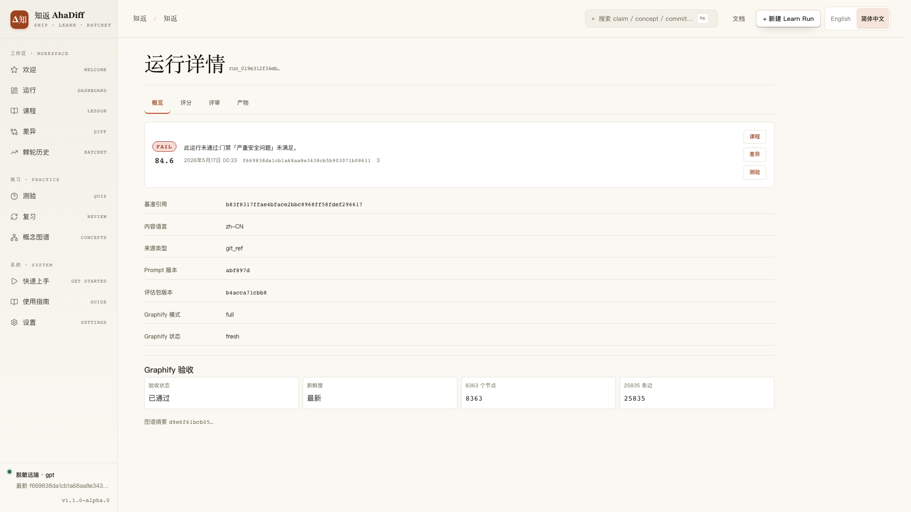
- Overview / Score / Judge / Artifacts 标签栏。
- FAIL 横幅含分数与未通过门禁原因。
- 元数据行：base ref、语言、来源类型、prompt 版本。
- Graphify Signoff 卡：passed、新鲜度、节点与边数。
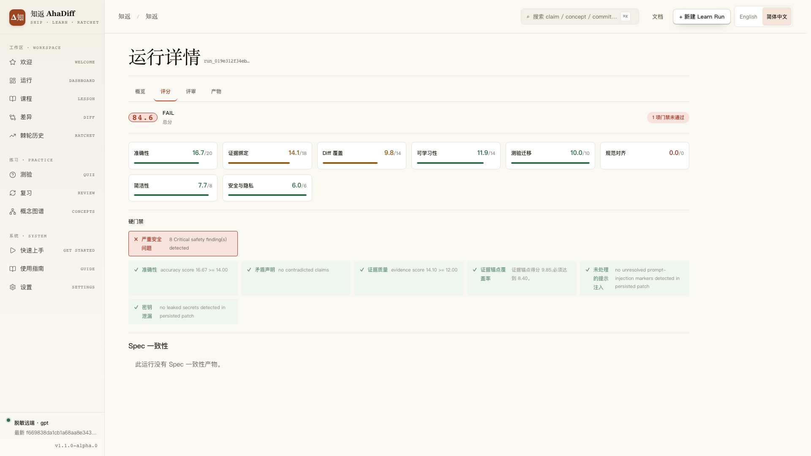
- FAIL 徽章、总分、未通过门禁数。
- 八个维度评分卡片，各带进度条。
- Hard Gates 行，critical safety findings 红色未通过。
- Spec Alignment 区块说明本次运行无相关产物。
8. 常见问题
为什么没有 Lesson / Diff / Quiz？
这些页面需要一个具体的 run_id。先至少运行一次 ahadiff learn，再从仪表盘或命令输出里打开对应的运行。
provider 失败了怎么办？
跑诊断并重新测试 provider。在 Windows PowerShell 上，用 $env: 形式设置变量并传 --base-url $env:AHADIFF_PROVIDER_BASE_URL，如配置 Provider所示。
然后重新运行配置 Provider里的对应 provider 命令。
课程被跳过了怎么办？
可能 diff 太小、learnability 太低，或没有足够的已验证 claim。如果你确定这就是要学的改动，用 --force-learn 重跑。
怎么改测验题量？
用 Settings → Preferences。固定模式总是问配置好的题数，从 1 到 30。自适应模式用捕获到的 diff 统计；它的默认范围是 3-12，没有这些统计的旧运行会回退到固定题数。
捕获限额是怎么选的？
新仓库走 Auto 捕获，按一条优先级阶梯确定限额：
Manual 模式保留你在 config 或 Settings 里设的数值。Settings 的 provider 表单按未保存的草稿预览这些限额，不做远程探测。
LLM judge 决定最终判定吗？
不。最终判定来自确定性的 score.json 和硬门禁。judge.json 仅供参考；它帮助解释模型反馈，但不会覆盖确定性判定。当某个维度不适用，例如无 spec 运行上的 spec_alignment，Score 和 Judge 会把它渲染为 N/A / 0/0。
Accuracy / Evidence 门禁为什么会变？
基线阈值不变：
大 diff 可以用一个由可见文件、hunk 和改动行得出的自适应阈值，ratio、regime 和 basis 会写入 hard_gates.*.policy。这绝不会放过坏证据。出现以下情况时运行仍会失败：
Diff Coverage 怎么判定？
Diff Coverage 只用持久化的 line_map.json 里可见的文件和 hunk：
被省略的文件不进入分母。hunk 数下限让微小 hunk 仍被计入。硬门禁把它的 ratio、regime 和可见 basis 写进门禁详情。
哪些安全发现会让运行失败？
一个未缓解的 Critical 安全发现会让运行失败。只有当本地捕获记录显示完整的脱敏形态（含 rule、hash、source、line 和 column），一个 Critical 密钥发现才会被视为已缓解。
能保证没有 bug 吗？
不能。AhaDiff 通过保持数据本地、把课程 claim 链到 diff 证据、暴露确定性分数和硬门禁详情来降低风险。你仍应在依赖某个改动前审阅生成的课程并跑你常规的测试套件。发布状态请看当前的 GitHub Actions 和 release notes，而非这份静态指南。
9. 关于本文档
本指南里的截图仅为示例。它们不含任何真实 provider 凭证、仓库内容或用户数据。
平台支持
macOS 和 Linux 是主要测试平台。Windows 能跑核心流程；两个功能仅限 POSIX。
| 功能 | macOS · Linux | Windows |
|---|---|---|
| 核心 CLI | ✓ | ✓ |
serve + WebUI | ✓ | ✓ |
--compare-dir | ✓ | ✗ |
hooks 安装目标 | ✓ | ✗ |
| 安装回滚 | ✓ | 部分 |
--compare-dir 需要仅在 macOS / Linux 上可用的安全目录文件描述符，其他平台 fail closed。hooks 目标使用 POSIX shell 钩子。回滚在 POSIX 上于原子替换前恢复权限模式，并在缺少 fchmod 的平台于替换后尽力恢复权限模式。验证快照
当前文档快照记录的本地检查。发布和 CI 状态以 GitHub Actions 为准。